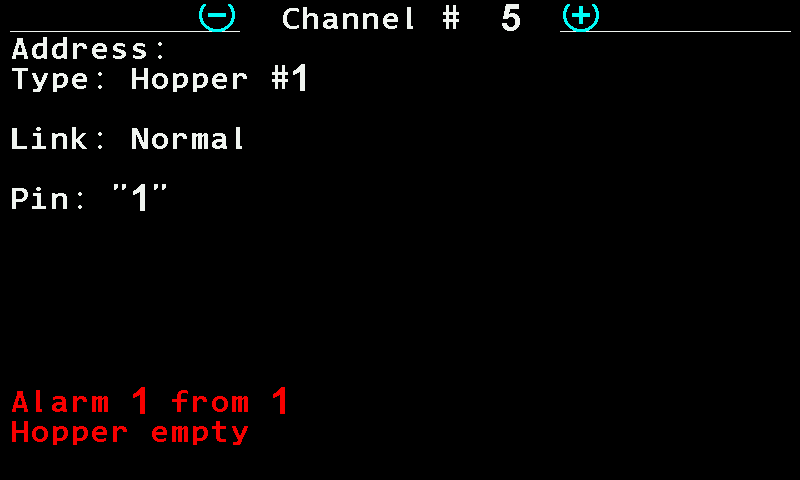

Der Sensor-Statusbildschirm
Wie Sie den Statusbildschirm eines Sensors lesen — Kanal, Adresse, Typ, Verbindungszustand, aktuelle Werte und aktive Alarme —, was jede Sensorart darauf zeigt und wie Sie sich per Touch darin bewegen.
Sie erreichen ihn über „Information“ (Information) im Kontextmenü eines Geräts (Sensoreinstellungen). Er zeigt, was das Panel über ein Gerät weiß.
Der Bildschirm

- „Channel #“ (Kanal Nr.) — das wievielte Gerät der Gesamtliste dies ist.
- Die Markierungen beiderseits der Kanalnummer. Wischen Sie nach links für das vorige, nach rechts für das nächste Gerät. Der Bildschirm bleibt offen.
- „Address:“ (Adresse:) — die Adresse, unter der das Gerät antwortet. In dieser Anleitung nicht angegeben.
- „Type:“ (Typ:) — die Art des Geräts und seine Nummer, hier Behältersensor 1.
- „Link:“ (Verbindung:) — der Zustand der Kommunikation. Tabelle unten.
- Die Werte dieser Geräteart — hier der Pegel am Eingang eines Behältersensors. Tabelle unten.
- „Alarm 1 from 1“ (Alarm 1 von 1) — wie viele Alarme dieses Geräts aktiv sind.
- Der Name des Alarms — der erste der aktiven Alarme.
Manche Geräte zeigen eine weitere Zeile, „Unit:“ (Einheit:) — die Einheit, an der das Gerät angeschlossen ist, zum Beispiel „Control panel“ (Bedienpanel) beim Geschwindigkeitssensor.
| Geste | Was sie tut |
|---|---|
| Wisch nach rechts / links | Nächstes / voriges Gerät — der Bildschirm bleibt offen. |
| Wisch nach oben oder Dreifingertippen | Zurück dorthin, wo Sie herkamen. |
Verbindungszustände
| Zustand | Bedeutung |
|---|---|
| „Normal“ (Normal) | Das Gerät antwortet. |
| „Not controlled“ (Nicht überwacht) | Das Gerät ist aus der Überwachung genommen: Weder die Kommunikation noch sonst etwas wird überwacht. |
| „No connection“ (Keine Verbindung) | Das Gerät antwortet nicht. Rot. |
| „Wrong device type!“ (Falscher Gerätetyp) | Etwas antwortet, aber nicht die Geräteart, die das Profil erwartet. Rot. |
| „IMITATION“ (Simulation) | Nur Geschwindigkeitssensor: Die Geschwindigkeit ist simuliert, nicht gemessen. Gelb. |
Die Werte werden nur gezeichnet, solange das Gerät unter Überwachung steht, antwortet und von der erwarteten Art ist. Ein Gerät außerhalb der Überwachung zeigt seine Identität und sonst nichts.
Was jede Sensorart zusätzlich zeigt

| Gerät | Was der Bildschirm zeigt |
|---|---|
| Geschwindigkeitssensor | Die Impulsfrequenz F= in Hz; bei zwei Geschwindigkeitssensoren F1= und F2=. Darunter die beiden Grenzen „Min speed, km/h“ (Mindestgeschwindigkeit) und „Max speed, km/h“ (Höchstgeschwindigkeit). An einer Maschine, die ein Produkt nach Masse mit Elektromotoren dosiert, sind die Grenzen jene, die die Motoren halten können, eingeengt durch die beiden Einstellungen; eine Grenze, die die Einstellungen nicht erfüllen können, steht in Rot als Ungleichung. Ohne solche Motoren wird eine auf null gestellte Grenze als ---- angezeigt, ausgeschaltet. |
| Behältersensor | Pin: und der Pegel am Eingang, "0" oder "1". |
| Sensor der Dosierwelle | F= in Hz, mit drei Nachkommastellen. |
| Gebläsesensor | F= in Hz. |
| Drucksensor | P= in kPa. |
| Kornsensor, Trockendüngersensor | Status: und einer von acht Zuständen — unten. |
| Flüssigdünger-Durchflusssensor | Status: Working, oder Working:Tramline im Fahrgassenmodus; darunter Flow= in l/min. |
| Arbeitsstellungssensor | „Position: Working“ (Position: Arbeit) oder „Position: Transporting“ (Position: Transport) und Pin: mit dem Pegel am Eingang. |
| Zündung, Öldruck, Batterieladung, Kraftstoffstand, Luftfilter | Pin: und der Pegel am Eingang, "0" oder "1". |
| Spuranzeigersensor | Nur die gemeinsamen Zeilen. |
| Fahrgassen-Aktuator | Status: Pulled in (eingezogen), Pulled out (ausgefahren), Working (in Bewegung), solange sich der Schieber bewegt, oder Unknown (unbekannt). |
| Dosierer-Elektromotor | Status: Working, oder Faulty (gestört), solange ein Alarm des Motors aktiv ist; dann „Last fault:“ (Letzte Störung:) mit dem Code des Controllers, falls es eine gegeben hat (Codes). Ein Universalcontroller ergänzt IN1[ ] IN2[ ] IN3[ ] mit den Pegeln an seinen drei Eingängen. |
| Flüssigdünger-Pumpencontroller | Status: Working oder Faulty. Bei einer Störung „Last fault:“ und der Code. Ohne Störung: Flow= in l/min, Load= (Last) in Prozent und Pressure sensor: No, wenn keiner da ist, sonst Pressure sensor= in bar mit dem Rohsignal in mA in Klammern. Striche stehen für einen Wert, den der Controller nicht liefern kann. |
Die acht Zustände eines Korn- oder Düngersensors
| Status | Bedeutung |
|---|---|
| Working | Normal. |
| Working:Tramline | Normal; der Sensor ist für den aktuellen Durchgang im Fahrgassen-Überwachungsmodus, oder seine Produktausbringung ist ausgeschaltet. |
| Configuring | Der Sensor hat neue Einstellungen erhalten und übernimmt sie. |
| Calibration in progress | Der Sensor führt seine Erstkalibrierung durch. Das dauert einige Sekunden. |
| Clogged | Der optische Kanal ist blockiert — am ehesten ein verstopftes Saatrohr. Rot. |
| Light struck | Zu viel Licht fällt in den optischen Kanal; der Sensor kann falsch zählen. Rot. |
| Faulty | Der Sensor meldet eine eigene Störung. Rot. |
| Unknown | Eine andere Störung, die sich nicht bestimmen lässt. Rot. |
Ihre Maschine tut etwas, das diese Seite nicht beantwortet? Schreiben Sie an support@agriwelt.com — es antwortet ein Ingenieur.